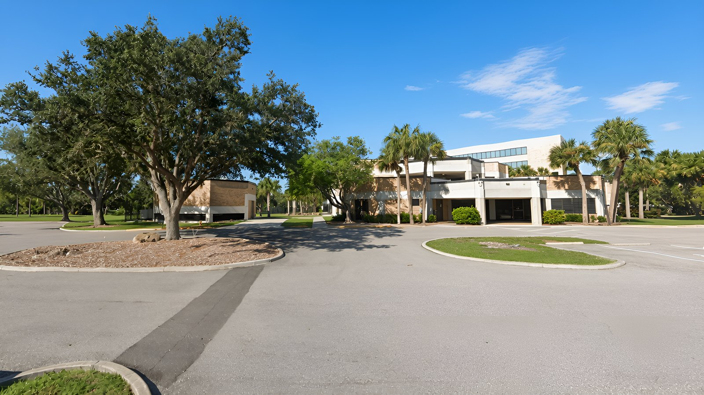
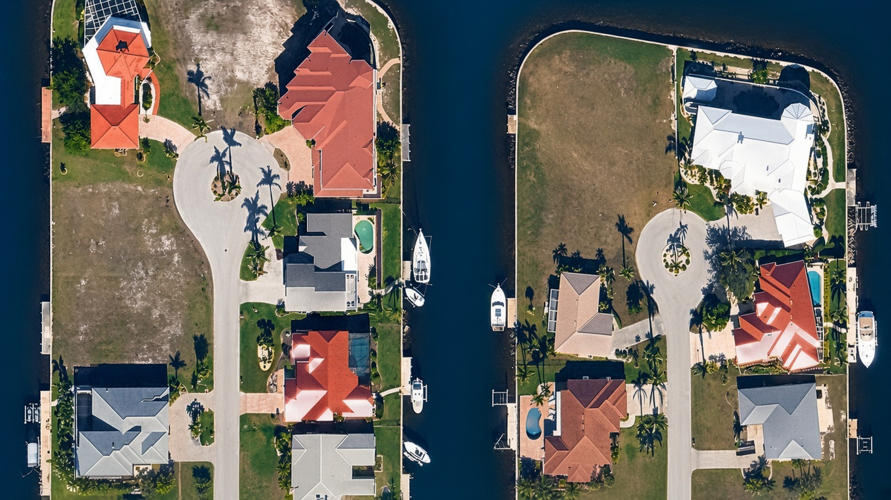

Draft preview for review. Not published. Images shown from local copies.

Charlotte County, FL · Buyer Tools
Before you fall for a house in Charlotte County, spend five minutes on the Property Appraiser's website. It is free, public, and updated daily.
The Charlotte County Property Appraiser values more than 210,000 parcels every year and runs more than 43,000 homestead exemptions. Every one of those parcels has a public record card that shows the year built, square footage, sales history, flood zone, and taxable values.
Here is how to find a property, how to read the record card, and which dates matter. If you are new to the area, our Punta Gorda ZIP codes guide explains which part of the county you are looking at.
The short version
Where: The Real Property Record Search on the Property Appraiser's website.
Search by: Address, parcel ID, owner name (last name first), short legal, land use, or ZIP.
Check: Year built, flood zone, sales history, and the gap between just value and assessed value.
Remember: Taxes reset after a sale. The seller's tax bill is not your tax bill.
In this guide
01Find the propertySearch fields02Read the record cardSection by section03Just, assessed, taxableWhat the numbers mean04Sales and comparablesSales search05Key datesExemptions and appeals06Offices and related sitesWhere to go07FAQs6 answersPart 01
Start with the Real Property Record Search.
Go to the Real Property Record Search and enter as little as you can. The fields include parcel ID, street number, street name, owner name with the last name first, short legal description, current land use, land use code, building use code, property ZIP code, and owner country.
A street number and the first word of the street name is usually enough. If more than one parcel matches, you get a results list you can sort by parcel ID, owner, property address, or certified just value. Click a parcel to open its record card.
Data timing
The search page says data is refreshed daily between 4:00 and 6:00 a.m., and the search may be unavailable during that window. In mid-November 2026, it listed ownership records as current through November 5, 2026, so a sale that closed last week may not show yet.
Source: Charlotte County Property Appraiser, Real Property Record Search.
Part 02
Each section answers a different buyer question.
The record card shows the owner and mailing address, property address, general parcel information, sales history, FEMA flood zone, certified tax roll values, land, land improvements, buildings, and the legal description. For a buyer, the most useful sections are building information, flood zone, sales, and values.
| Section | What you will find | Why it matters |
|---|---|---|
| General parcel information | Taxing district, whether it is inside the City of Punta Gorda, current use, zoning code, Save Our Homes base year, and a waterfront yes or no. | City parcels pay city taxes too. The zoning code tells you what can be built. |
| Sales information | Each recorded sale with date, book and page, instrument number, price, and a qualification code. | Links open the deed images on the Clerk's site. |
| FEMA flood zone | Flood map panel, special flood hazard area status, flood zone, and base flood elevation. | Drives flood insurance and building rules. |
| Certified tax roll values | Just, assessed, exemptions, and taxable value for county, city, school, and other taxing authorities. | Shows how much of the current bill comes from the owner's exemptions. |
| Building information | Each building's description, year built, floors, rooms, bedrooms, air-conditioned area, and total area. | A quick check on age and size before an inspection. |
| Land and improvements | Land use, zoning, acreage or units, land value, and coded site improvements such as fences, walls, and paving. | Shows what the appraiser has on file for the site. |
The card also links to the county's GIS map viewer for the parcel, a tax estimator, and a form to report damage after a catastrophic event. The site warns that it provides the data without warranties, so treat it as a starting point and confirm important facts with a survey, inspection, and title work.
An example: the record for the historic Charlotte High School campus on Cooper Street in Punta Gorda lists the main building with a 1926 year built, shows the parcel is inside the City of Punta Gorda, and includes its flood zone and base flood elevation. You can read the same sections for any house.
Source: Charlotte County Property Appraiser, record search and record cards.
Part 03
Three numbers, three different meanings.
Just value is the appraiser's market value estimate as of January 1. Assessed value is just value after caps such as Save Our Homes. Taxable value is assessed value minus exemptions like homestead. Your tax bill is based on taxable value.
Jan 1
Valuation date for every parcel
210,000+
Parcels valued each year
43,000+
Homestead exemptions administered
25 days
To petition a value after the TRIM notice
The Property Appraiser's site explains that Florida's Supreme Court has treated just value as legally the same as fair market value, meaning the most probable price a buyer would pay for the property in its condition on January 1.
For buyers, the key point is that a homesteaded seller's assessed value may be far below just value because of the Save Our Homes cap. When the home sells, the assessment resets to just value the next January 1. Estimate your own taxes from the price you pay, not from the seller's bill. Our homestead exemption guide covers how the cap and the exemption work, including the Amendment 3 changes approved in November 2026.
Source: Charlotte County Property Appraiser, What is Just (Appraised) Value; Florida Department of Revenue, Amendment 3 bulletin PTO 26-21.
Part 04
A free way to see what nearby homes actually sold for.
The Sales Record Search lets you filter recorded sales by current land use, map number, short legal, ZIP code, land use code, sale price range, year built range, air-conditioned area range, and sale date range. You can choose which data is returned: general, tax, building, land improvement, sales, and building components.

Lots and homes alike: recorded sales are public and searchable.
Set the land use to single family residential, enter a ZIP code, a year-built range, an area range, and sales from the last six to twelve months. That gives you a rough set of comparable sales. Recorded sales do not show condition, upgrades, or concessions, so a full market analysis still needs MLS data. For lots, pair this with our guide to buying land in Punta Gorda.
Source: Charlotte County Property Appraiser, Sales Record Search.
Part 05
Miss March 1 and you wait a year for homestead.
January 1 is the valuation date. Exemption applications are due March 1. Denial notices go out July 1, with July 30 the deadline to petition a denial. The Notice of Proposed Property Taxes, also called the TRIM notice, is mailed in mid-August, and value petitions are due 25 days after it is mailed.
January 1
Every parcel is valued as of this date, and the exemption filing period opens.
March 1
Deadline to file homestead and other exemption applications.
July 1
Denied exemption and agricultural applications are notified by certified mail.
July 30
Deadline to petition a denied exemption or classification.
Mid-August
The Notice of Proposed Property Taxes (TRIM) is mailed.
25 days later
Deadline to petition the Value Adjustment Board on value.
If you disagree with your value, the Property Appraiser's office asks you to come in and discuss it first, with evidence of market value as of January 1. If you still disagree, you can file a written petition with the Clerk of the Circuit Court, acting as clerk of the Value Adjustment Board.
Source: Charlotte County Property Appraiser, Important Dates; Charlotte County Property Appraiser, Notice of Proposed Property Taxes.
Part 06
Three Property Appraiser offices, plus two other offices buyers use.
The Property Appraiser's main office is at the Murdock Administration Center, 18500 Murdock Circle, Port Charlotte. There are also offices in Punta Gorda at 410 Taylor Street and in Englewood at 6868 San Casa Drive. All three are open Monday through Friday, 8:00 a.m. to 5:00 p.m.
Port Charlotte
18500 Murdock Circle, Port Charlotte, FL 33948.
Hours
Mon to Fri, 8 a.m. to 5 p.m.
Punta Gorda
410 Taylor Street, Punta Gorda, FL 33950.
Hours
Mon to Fri, 8 a.m. to 5 p.m., closed 12 to 1
Englewood
6868 San Casa Drive, Englewood, FL 34224.
Hours
Mon to Fri, 8 a.m. to 5 p.m.
The Property Appraiser sets values and exemptions but does not collect taxes. Tax bills and payments are handled by the Charlotte County Tax Collector, and recorded deeds and Value Adjustment Board petitions go through the Charlotte County Clerk of the Circuit Court. Homes in North Port are in Sarasota County, so their records are with the Sarasota County Property Appraiser.
Source: Charlotte County Property Appraiser, Directions and Office Hours.
Part 07
How do I look up a property in Charlotte County, Florida?
Use the Real Property Record Search on the Charlotte County Property Appraiser's website. You can search by parcel ID, street number and name, owner name (last name first), short legal description, land use, ZIP code, and more.
What is just value on the Charlotte County record?
Just value is the Property Appraiser's estimate of market value as of January 1. Under Florida law, just value is legally the same as fair market value. Assessed value can be lower because of caps such as Save Our Homes.
Does the property record show the flood zone?
Yes. Each parcel record card includes a FEMA flood zone section with the flood map panel, whether the parcel is in a special flood hazard area, the flood zone, and the base flood elevation.
How often is the Charlotte County Property Appraiser data updated?
The site says data is refreshed daily between 4:00 and 6:00 a.m. In mid-November 2026, it listed ownership records as current through November 5, 2026.
When is the homestead exemption deadline in Charlotte County?
March 1. The filing period for exemption applications runs from January 1 to March 1, and the Property Appraiser's office accepts homestead applications online.
How do I challenge my property value?
Talk with the Property Appraiser's office first. If you still disagree, you can file a petition with the Value Adjustment Board through the Clerk of the Circuit Court. The deadline is 25 days after the Notice of Proposed Property Taxes is mailed in mid-August.
Related Reading
Ready to look at homes? Browse current listings or estimate a payment with our mortgage calculator.
Also: Moving to Punta Gorda · Wind mitigation inspection · How we work with buyers
Want a second set of eyes on a property?
We pull the record, sales, and flood details for customers before they write an offer. Call or text The Helgemo Team at (941) 770-2275.
The office is at 320 Cross Street, Punta Gorda, Florida 33950. You can also meet Brian Helgemo or read more about the team.
Sources: Charlotte County Property Appraiser, Real Property Record Search; Charlotte County Property Appraiser, Sales Record Search; Charlotte County Property Appraiser, Real Property; Charlotte County Property Appraiser, Important Dates; Charlotte County Property Appraiser, TRIM; Charlotte County Property Appraiser, Directions and Office Hours; Florida Department of Revenue, PTO 26-21; Charlotte County Tax Collector; Charlotte County Clerk of the Circuit Court. Record details and dates were checked on November 17, 2026. This article is general information, not legal or tax advice.